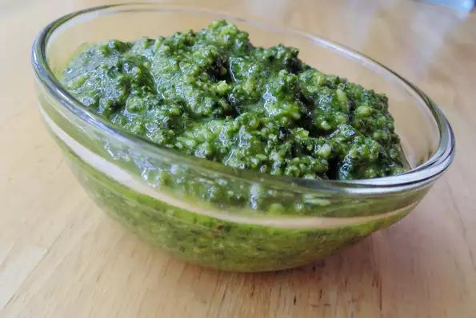

Pesto Genovese

An authentic Genoese pesto. It's straight from Italy and you won't find a better recipe! This calls for a spoonful of pecorino cheese, but you could also use all Parmesan in a pinch. To store in fridge for up to 1 month: place pesto in a jar, cover with olive oil, and top with a lid.
Ingredients:
- 2 cloves garlic, or more to taste
- 2 tablespoons pine nuts
- 1 bunch fresh basil leaves
- ½ cup grated Parmigiano-Reggiano cheese
- 1 ½ tablespoons grated pecorino Romano cheese
- ½ cup extra-virgin olive oil
Steps:
- Crush garlic using a mortar and pestle. Add pine nuts; crush with the garlic. Add basil leaves gradually, making circular movements with the pestle, until a smooth paste forms.
- Mix Parmigiano-Reggiano cheese and pecorino Romano cheese using a wooden spoon. Stir in olive oil until pesto is blended.